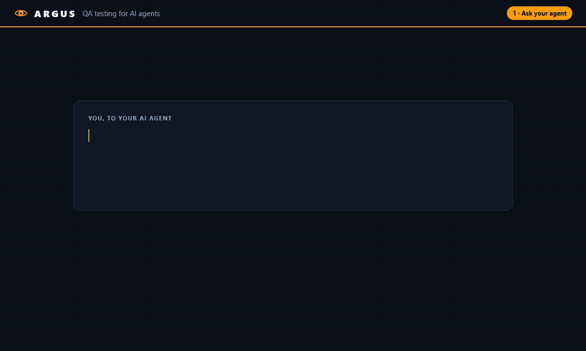
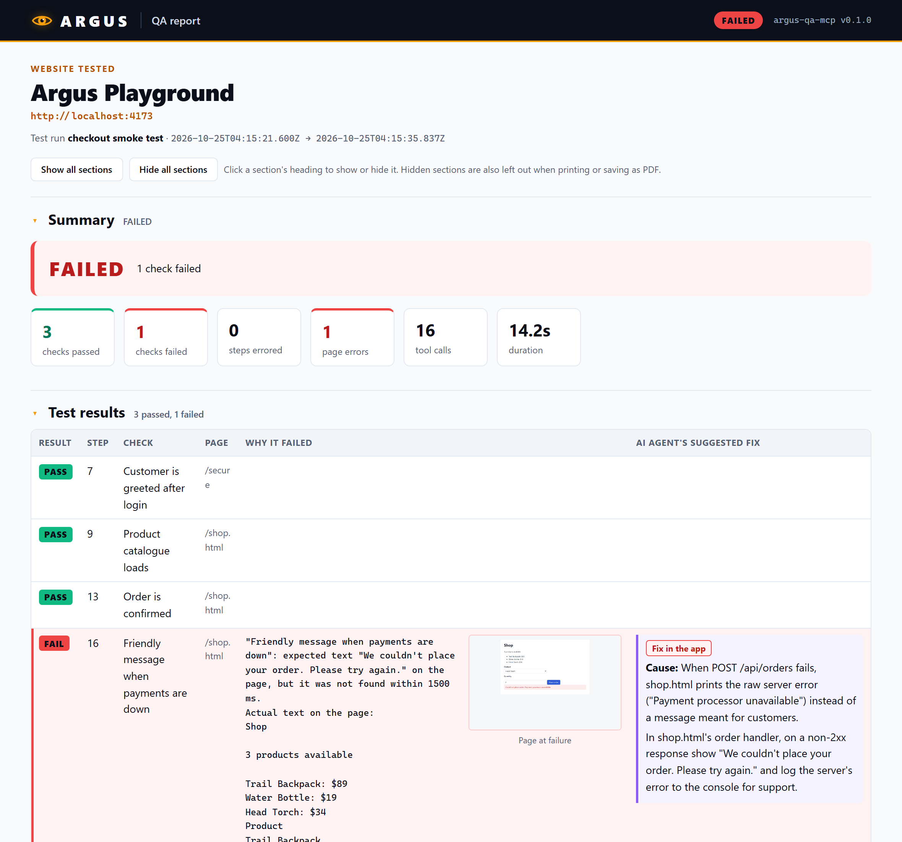

AI QA testing your clients can actually read.
Argus gives Claude, or any AI agent that speaks MCP, a real browser. It records every step, explains each failure in plain English with a screenshot and the moment in the video, adds the agent's suggested fix, and emails the finished report to your client.
claude mcp add argus -- npx -y github:RileyHall99/argus-qa-mcp
Works with Claude Code, Claude Desktop and any MCP client. Needs Node.js 22+.

How it works
Ask once. Get a report you can hand over.
No test scripts to write. Describe the flow you want checked, and your agent drives Argus, the same way you'd brief a human tester.
Ask your agent
"Log in, place an order, and check customers see a friendly message if payments are down. Record it."
Argus drives a real browser
Clicks, typing, iframes and network mocking in Chromium, all recorded as video and a Playwright trace.
Failures explained
Every failed check gets a plain-English reason, a screenshot of the page and the time it happens in the video.
Delivered to your client
The agent adds its suggested fixes, then Argus emails the branded report and pings your Slack or webhook.
The report
Not a log dump. A report people understand.
- A clear verdict: PASSED or FAILED, with every check listed by name.
- Why it failed, in plain language: expected vs. what was actually on the page.
- Evidence: a screenshot at the moment of failure, and a button that jumps the video to it.
- The agent's suggested fix, with its diagnosis of the cause.
- Errors from the website: console errors, crashes and failed requests, de-duplicated.
- Hide any section before you share it, then print or save as PDF.

Features
Everything an agent needs to test like a pro.
18 tools your agent can call, built on Playwright.
A real browser
Navigate, click, type, choose options, press keys and hover, including inside iframes, with a page snapshot so the agent knows what's there.
Real pass/fail checks
assert_text and assert_visible return PASS or FAIL with the actual page text, and the report tallies them.
Plain-English errors
"Element is covered by a cookie banner", not 40 lines of stack trace. Argus recognizes hidden, disabled and missing elements, timeouts and network errors.
Network mocking
Simulate API errors, payment declines, outages and slow responses without touching your backend, so you can test the unhappy paths.
Recordings for review
Video, a step-by-step Playwright trace, a JSON log and the HTML report, saved for every session.
Email & notifications
When the run is done, the report goes to your client by email (any SMTP provider), with a ping to Slack, Discord, Teams or any webhook.
Safety
Built to be pointed at real sites.
Letting an AI loose in a browser should not keep you up at night. These guards are on by default.
No real payments
Refuses to type card details on pages using live Stripe keys, and blocks live Stripe, Adyen, Braintree and PayPal API calls. Test modes work normally.
Secrets masked
Passwords and card numbers become •••••• in reports and logs, and are blacked out in failure screenshots.
Stay on your site
An optional host allowlist stops the agent from opening pages anywhere else, whether by typing a URL or clicking a link.
Reports go where you say
Email recipients and webhooks come only from your configuration. No page can talk the agent into sending your report somewhere else.
Install
Running in two minutes.
Install the browser once, add Argus to your AI client, and ask for a test.
1. Install Chromium for Playwright (once):
npx playwright install chromium
2. Add Argus:
claude mcp add argus -- npx -y github:RileyHall99/argus-qa-mcp
3. Ask: "Start a recording called "login flow", log in to staging.myapp.com as test@myapp.com, check the dashboard loads, then stop the recording and suggest fixes for anything that failed."
Add this to claude_desktop_config.json (on Windows in %APPDATA%\Claude\, on macOS in ~/Library/Application Support/Claude/), then restart Claude Desktop:
{
"mcpServers": {
"argus": {
"command": "npx",
"args": ["-y", "github:RileyHall99/argus-qa-mcp"]
}
}
}Run npx playwright install chromium once first, or set ARGUS_BROWSER_CHANNEL=chrome to use your installed Chrome.
Email the report to your client and get a ping when each run finishes. This works with any SMTP provider (SendGrid, Amazon SES, Microsoft 365, Gmail with an app password, …):
claude mcp add argus \ -e ARGUS_EMAIL_TO=client@acme.com \ -e ARGUS_EMAIL_FROM=qa@yourco.com \ -e ARGUS_SMTP_HOST=smtp.sendgrid.net \ -e ARGUS_SMTP_USER=apikey -e ARGUS_SMTP_PASS=<your-key> \ -e ARGUS_NOTIFY_WEBHOOK=https://hooks.slack.com/services/… \ -- npx -y github:RileyHall99/argus-qa-mcp
The email waits until the agent has suggested a fix for every failure (up to 3 minutes), so your client gets the fixes too. All settings →
FAQ
Questions
Is it really free?
Yes. Argus is open source under the MIT license. It runs on your machine or server; there is no account, no usage limit and nothing phoning home.
Which AI agents does it work with?
Any client that supports the Model Context Protocol (MCP), including Claude Code and Claude Desktop. Argus is the browser and the reporting; your agent does the thinking.
Do I need to write test scripts?
No. You describe what to check in plain language and the agent decides which steps to take. Labelled checks ("Order is confirmed") make the report read like a test plan.
Can I run it on a server, not my laptop?
Yes. Argus runs headless by default, and the email delivery and webhook exist for exactly that case: the client never needs access to the machine the agent runs on.
Is it safe to test a site that takes payments?
Use a staging site in your payment provider's test mode. Argus blocks live Stripe, Adyen, Braintree and PayPal traffic and refuses to type card details on pages using live Stripe keys. It's a safety net, though, not a guarantee, and it can't see server-side charges. Recordings (video and trace) can contain what was typed, so treat them as sensitive.
What does the client receive?
An email with the verdict and each failure explained, including the agent's suggested fix. Attached is a self-contained report.html that opens in any browser and, if it fits, the screen recording. The Playwright trace is never emailed.
Give your agent eyes. Give your client answers.
Argus is new and built in the open. Try it, star it, and tell us what you'd want next.